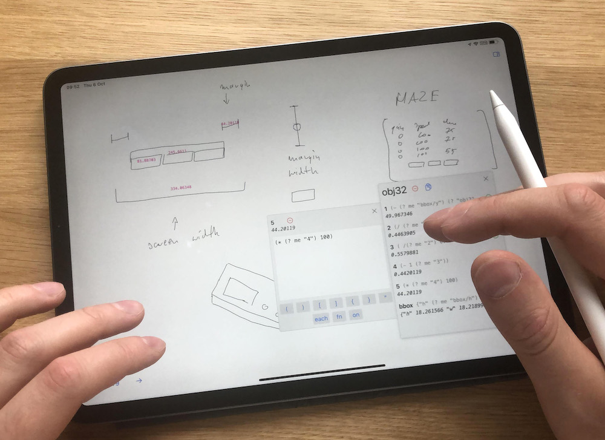
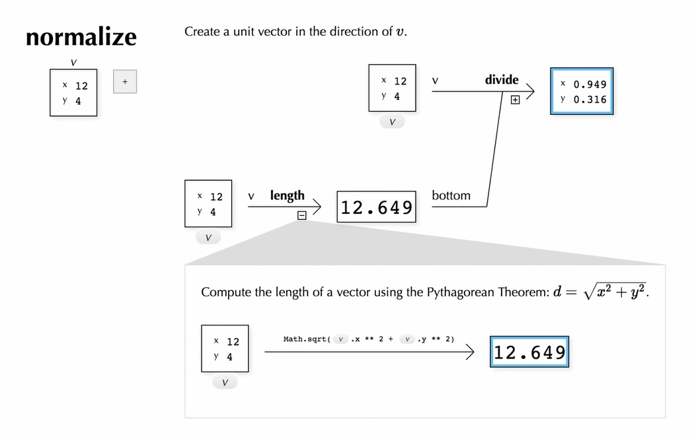

Hi!
I'm a PhD student at the University of Washington in the School of Computer Science & Engineering.
I work on dynamic media, end-user programming, convivial & equitable computing, visualization, learning communities, creative tools, and tangible/spatial computing.
 Lately I've been developing Engraft, an API that makes live & rich programming interfaces powerful and practical through composition.
Lately I've been developing Engraft, an API that makes live & rich programming interfaces powerful and practical through composition.
 Before starting at UW, I was part of the team that made
Before starting at UW, I was part of the team that made  .
.
Some smaller projects I've worked on:
-

Inkbase: a programmable digital sketchbook. -

PANE: a live-programming environment built around data-visibility.
Unrelatedly – I've made a handful of mapping gadgets which are kinda fun! In descending order of usefulness:
- Strava Atlas (all your Strava activities on a single map)
- Two maps at the same scale
- Elevator (interactively-specified hypsometric tints)
- Street trees in SF
- Explanation of cylindrical equal-area projections
(My older site has some older projects.)
Feel free to contact me: joshuah@alum.mit.edu.
Mastodon: @qualmist@assemblag.es.
Thanks for visiting!